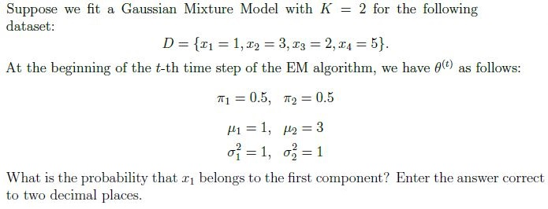
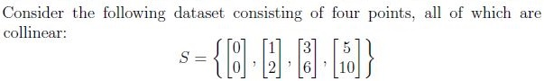
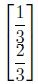
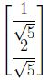
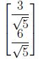
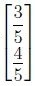

Suppose you toss a coin four times and observe no heads. You then give the coin to your friend, who tosses it until the first head occurs. Your friend tosses the coin a total of five times. Let p
denote the probability that the coin comes up heads. Find the maximum likelihood estimate of p.
Q10SA4 marks

Comprehension passage - the questions below it refer to this
Based on the above data, answer the given subquestions.

Q11MCQ2 marks
Among the vectors given below, choose a representative that has unit length.




Q12SA3 marks
If standard PCA is performed on this dataset, what is the variance along the first principal component? Enter the answer correct to two decimal places.
Comprehension passage - the questions below it refer to this
Suppose that 100 items are sampled from a manufacturing process and 10 are found to be defective. Let p denote the proportion of defective items. Assume that the prior distribution for p
is Beta(1, 1).
Based on the above data, answer the given subquestions.
Q13MCQ2 marks
Select the correct options from the following:
Posterior distribution for p is Beta(91, 11).
Posterior distribution for p is Beta(11, 91).
Posterior distribution for p is Bernoulli(0.1).
Posterior distribution for p is Bernoulli(0.9).
Q14SA2 marks
Find the posterior mean. Enter the answer correct to two decimal places.